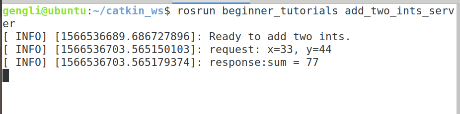

第二节 C++实现Services通信
这一节介绍C++实现Services通信。
1. 准备
下面代码中会用到我们在第二章第七节讲到的内容，会调用里面编译好的 C++ 头文件。当初我们定义的 srv 文件内容如下：
int64 A
int64 B
---
int64 Sum
2. 代码
打开 beginner_tutorials/src/，新建的 add_two_ints_server.cpp 和 add_two_ints_client.cpp 保存在该文件夹下。
2.1 client 端
#include "ros/ros.h"
#include "beginner_tutorials/AddTwoInts.h"
#include <cstdlib>
int main(int argc, char **argv)
{
ros::init(argc, argv, "add_two_ints_client");
if (argc != 3)
{
ROS_INFO("使用方法： add_two_ints_clent X Y");
}
ros::NodeHandle n;
// "add_two_ints" 是连接客户端和服务器端的关键
ros::ServiceClient client = n.serviceClient<beginner_tutorials::AddTwoInts>(
"add_two_ints");
beginner_tutorialsv::AddTwoInts srv;
srv.request.A = atoi(argv[1]);
srv.request.B = atoi(argv[2]);
if (client.call(srv))
{
ROS_INFO("SUM: %d", (int) srv.response.Sum);
}
else
{
ROS_ERROR("Failed to call service add_two_ints");
return 1;
}
return 0;
}
2.2 server 端
#include "ros/ros.h"
#include "beginner_tutorials/AddTwoInts.h"
bool add(beginner_tutorials::AddTwoInts::Request &req,
beginner_tutorials::AddTwoInts::Response &res )
{
res.Sum = req.A + req.B;
ROS_INFO("request: x=%d, y=%d", (int)req.A, (int)req.B);
ROS_INFO("response:sum = %d", (int)res.Sum);
return true;
}
int main(int argc, char **argv)
{
ros::init(argc, argv, "add_two_ints_server");
ros::NodeHandle n;
/* 通过 n.advertiseService() 返回一个ServiceServer对象，收到请求后执行 add() 函数 */
ros::ServiceServer service = n.advertiseService("add_two_ints", add);
ROS_INFO("Ready to add two ints.");
ros::spin();
return 0;
}
3. 编译
在 beginner_tutorials 下面的 CMakeLists.txt 文件最后添加如下几行：
add_executable(add_two_ints_server src/add_two_ints_server.cpp)
target_link_libraries(add_two_ints_server ${catkin_LIBRARIES})
add_dependencies(add_two_ints_server beginner_tutorials_gencpp)
add_executable(add_two_ints_client src/add_two_ints_client.cpp)
target_link_libraries(add_two_ints_client ${catkin_LIBRARIES})
add_dependencies(add_two_ints_client beginner_tutorials_gencpp)
下面在终端运行：
cd ~/catkin_ws
catkin_make
4. 运行Nodes
分别在三个终端输入：
roscore
rosrun beginner_tutorials add_two_ints_server
rosrun beginner_tutorials add_two_ints_client 33 44
第2,3个终端输出如下：


5. 总结
以上便是 Services 通信的C++实现。和之前的Topics对比，差别不大，只是这里的客户端的 serviceClient() 和服务端的 advertiseService() 两个函数名字感觉不好记。下面本来是要讲Python的，但感觉两个一起学反而容易混乱。